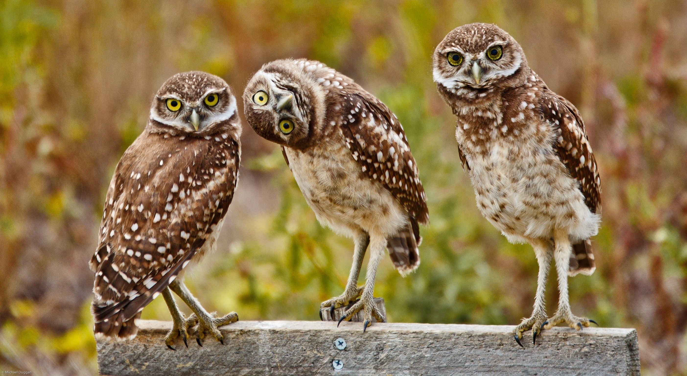
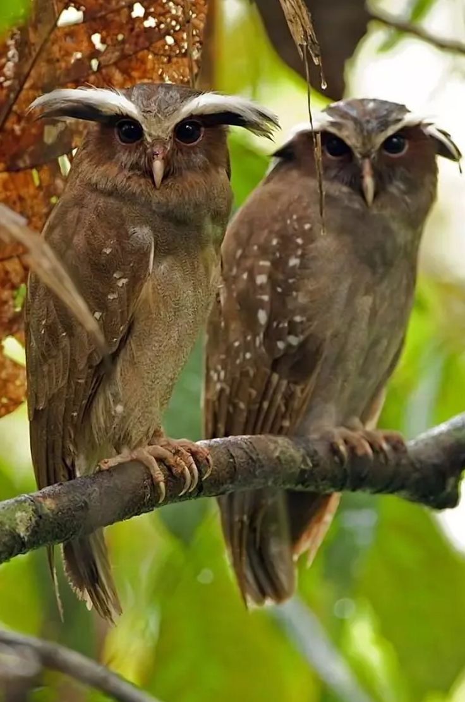
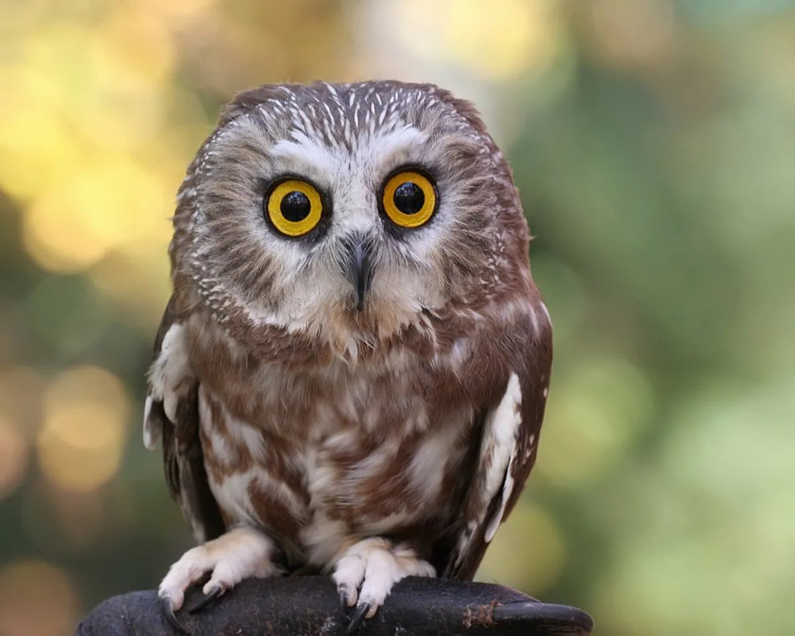

Немного о совах...

Совы — хищные птицы из семейства совиных отряда совообразных.
Считается, что первые предки совиных, которые появились на планете более 60 млн. лет назад,
мало чем напоминали современных представителей семейства.
В ходе эволюции у сов изменился как внешний вид, так и строение тела,
при этом наиболее значительные трансформации произошли в течение последних 2-3 млн. лет.
Характеристика и описание птиц:
Совы ведут ночной образ жизни по несколькими причинам:
- Основу рациона совиных составляют грызуны и мелкие
млекопитающие, которые также активны в темное время суток;
- Имеющим острый слух совам легче находить добычу ночью,
когда отсутствует большинство посторонних звуков;
- Дневные мелкие птицы при обнаружении совы начинают издавать крики опасности,
отпугивая добычу и привлекая других пернатых, в том числе и более крупных хищников.
Совы не образуют стай и живут поодиночке или парами. Численность популяций
большинства разновидностей сов стабильно восстанавливается и не вызывает опасений.
Окраска оперения у большинства разновидностей совиных неяркая.
Обычно преобладают серые, бурые, коричневые оттенки.
В окрасе часто встречаются многочисленные черные или светлые
вкрапления в виде пятен, точек, полос.
Филин и сова являются представителями подсемейства настоящих сов.
Отличить их друг от друга можно по следующим признакам:
- Филины крупнее сов;
- У филинов имеются так называемые перьевые уши,
представляющие собой растущие над глазами пучки удлиненных перьев;
- У сов расходящиеся в разных направлениях от глаз перья образуют венчик;
- Строение перьев сов обеспечивает им бесшумный полет,
филин во время перелета издает звуки, похожие на свист;
- Совы активны преимущественно ночью, филины охотятся в любое время суток.
Виды сов с фото:
Кроличий сыч

Рогатая неясыть

Мохноногий сыч

Филин

Семейство настоящих сов отряда совообразных объединяет 30 родов и
более 200 разновидностей, 17 из которых встречаются в России.
Хочу знать больше!